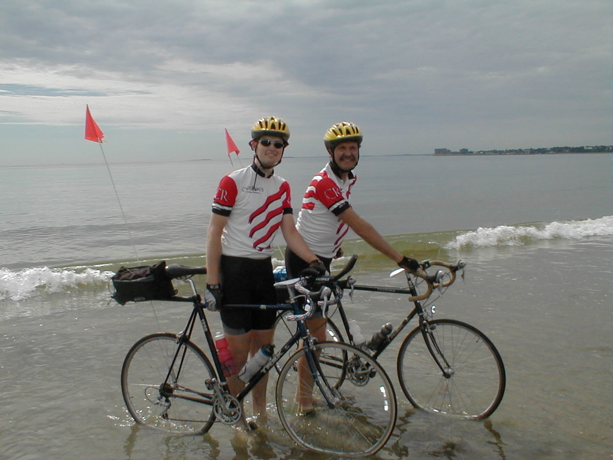

Day 48: June 29, Lexington, MA to Revere BeachPrevious Day - Home Photo of the DayDad and I dipping our wheels into the Atlantic Ocean on Revere Beach. Keegan's LogDay 48: June 29, Lexington, MA to Revere Beach Mileage: 21.41 milesWeather: Cool and overcast Vertical Climb: 350 feet Riding Time: 1:40 This morning began somewhat normally, we packed our baggage into mom's car while the other riders had to have their luggage at the truck by 5:30 AM. Breakfast was at Denny's, then we left at the usual 7:15. Mom and Lauren followed the directions to the beach and waited for us with the other families for the riders to arrive. The first 15 miles were through the streets of outer Boston, we had a bit of traffic in the early rush hour. Most of the riders stayed together, I counted 25 in our pack on the way out. We were all adorned in our team jerseys, the locals would frequently cheer us un as we passed. Most people were quiet, the fast riders stayed with the pack, all were deep in thought as we rode the final miles of our grand tour. At 5 miles from the beach we stopped to regroup, we left Manhattan Pier together 7 weeks ago and we would now ride to Revere Beach together as well. When all of the riders had arrived, we lined up two-by-two with a van on either end of the line. John did the honors of leading the group, Julie was occupied driving the van for Tracy, who was still recovering from her accident. We rolled out in a neat line, the final miles slowly slipping away as we all reflected upon memories of miles past. Some rode quietly, some chatted nervously, sometimes chants of "LA - BOSTON!" broke out. Finally the ocean appeared on the horizon, then we passed the cheering families waiting for us. We rode parallel to the ocean then made a U-turn to a beachside pavilion. Each rider dismounted and carried his or her bike across the sand, finally reaching the waterline of the Atlantic Ocean. Some people dipped their wheels, some dipped the bottom half of the bike, Linda, Leslie, Chuck and Ethel even went for a swim. The was some celebrating at the pavilion, though it was bittersweet; the ride is finished but we will soon have to say our goodbyes. We got pictures of the whole group in front of the ocean, containers of Atlantic sand to be displayed next to the Pacific sand, and dad and I tried to pick the seaweed out of our spokes. The staff loaded up the bikes in the truck and we headed for the car. The hotel was in Dedham, about a 30 minute drive through the Boston traffic. By the way, Boston has the worst drivers and the worst roads I have ever seen, it's amazing we made it to the hotel at all. We checked in at the stately Hilton, and all of us promptly fell asleep on the beds. After a while we headed to downtown Dedham for some lunch, a bagel sandwich place. We killed a little time, then headed down to the final banquet at around 6:00. The banquet was in a private dining room, and we appropriately started the festivities with a buffet dinner. Once everyone had eaten their fill, including a Congratulations cake, Tracy started by thanking the staff and riders for a great tour. Awards were given out, Lynn and Diane Z. each got one of our signs for their improvement and courage. Dad and I got a chain of inner tubes for having the first and second most flats of anyone on this tour, we will of course patch the tubes and put them back into service. Leslie and JJ came away with the big prize, the US map we had used to track the group's progress, for their amazing strength and toughness, they started as beginners but stuck it out and pedaled every inch of the way. JJ also won the flat tire pool, he never had a flat the entire trip, and he gave the over $100 pot to Tracy's charity (which provides bicycles to children who otherwise wouldn't have one). A special jersey created by John and Mark was auctioned off, JJ's father bid $155 for the jersey, the money also went to Tracy's charity. Each of us were called up to receive a certificate, and a chance to say goodbye to the staff. The banquet came to an end, but the room was left open for people to say their goodbyes. It was hard to say goodbye to the family we've spent the last seven weeks with. Handshakes and hugs were exchanged, and slowly people trickled out to turn in for the night. After our goodbyes we did the same. We leave tomorrow morning for the long drive back to Zionsville. We're still working on the details to make up the two lost days in Kansas, but except for these loose ends, our tour is now over. It's been a wonderful trip, thanks again to the staff for keeping us going and to the riders for making the trip so much fun. I might not miss getting up at 5:30 every morning, but I know I'll miss all of the people I've met and the bonds we shared. Thanks to those who offered their support from afar, Holly, Mom and Lauren, thanks to Therese for recommending CrossRoads. I couldn't have done it without you guys. Don't forget to keep on riding and smiling... -Keegan Phil's LogPart IWe made it! We are just back from the closing banquet (where we were told to start eating less than 4,000 calories per day!) I'll have a lot of time tomorrow to write a long letter with details and a few answers to recent questions. And if anyone has questions, now is a good time to ask them. I'll have some comments on equipment and training for a ride like this - it isn't as hard as one might imagine. And as you read the next e-mail, you might have your checkbook ready for a contribution to the Diabetes Youth Foundation. I'll reiterate details. And for those that pledged prayers and good wishes, they were appreciated, and they worked! Our Certificates we received this evening contained a quote that we learned many days ago, I think I quoted the writer then. It is a good closing line for today. It is true. "Happy are those who dream dreams and are ready to pay the price to make them come true." Part II (I'm sorry that these last two messages are so late. We lost our ability to access our ISP by phone, and it took some time to correct it.) Twenty miles remained from Lexington to Revere Beach in Boston. Karen, always most mindful of the situations she's approaching, and I left an hour before route rap to get film and cash for tips. Lexington traffic was terrible, and we arrived from our three mile trip to catch just the tail end. We learned to maintain a tight pack, and that we would rejoin at 15 miles so that we could finish the last five miles together, And that we did, rode as a group to Revere Beach in Boston. Most took off their shoes and carried their bikes into the water a little, Keegan and I did. Some dipped their back wheels, then dove in for a swim. Ethel was one of those, and she looks as strong a swimmer as she does a bicyclist. Carl provided champagne for the occasion. There was a lot of hugging, a few tears. In the evening, we had another banquet. This was the time for the staff to honor the riders, and a few awards went out. "The Brown Brothers", Keegan and I, were given a long chain of tire tubes in honor of our most flats title. As Tracy called out the numbers of flats, only one remained that had never so suffered. JJ took the award, and immediately turned it over to Tracy's "Bikes For Kids" fund. Lynn was given the "3,000 Miles!" sign since it was such an accomplishment for her as she had had early problems. A sign that said "Boston!" went to Diane as the most improved rider. Tracy left us with some admonishments. Don't walk out of a restaurant without paying. (Since all of our meals have been prepaid, we are used to just getting up and leaving.) Don't drive on the shoulder. Don't expect your family to make you a breakfast buffet every morning.. Don't sign out when you leave for work. I offered a prayer in thanks for our safety. Karen sang a song. An old friend, Jimmy Teter, asked me to be sure to identify who won the tire pool, and a few other questions about tires. Well, of the 40 riders, Keegan had the most flats with 17, I was second with 12. For me, my problem was at the beginning, and I had chosen cheap tires, with aramid belts, but not intended for hard use. People on Continentals seemed to do well (I rode on them after Indiana and only had one puncture flat with them). JJ and Leslie rode on a brand I can't recall but they were, s the manufacturer called them, "Armadillo Technology". They were not particularly big, beefy tires; from a distance they looked ordinary. But when you held one you realized that it weighed more. And when feeling the rubber on the circumference, you could feel that it was denser, stiffer, harder, but mostly denser. It was just much more resistant to stuff going through it. Yes, they would cost a little speed, but remove a lot of frustration. And in JJ's case, the two casings lasted the whole distance. The crown had worn off the rear tire, but it still looked good and never flatted. This is a good chance to talk about bicycles in general. One fellow named Chris rode a track bike. A track bike has a frame and two wheels. It has no derailleurs nor gears to change, no brakes (though he had fitted a front brake), it is very spartan. We all figured he was either crazy, or an awesome bicyclist. The latter proved to be true. Mind you, he had basically a one speed bike. He could change gears, to a small ratio of change, by removing his rear wheel and putting a different sprocket on it. For hills, he equipped his rear wheel with a second sprocket, on the other side of the axle, and he had to remove the wheel and flip it to change gearing. And to me te worst part, which some may have realized from the last statement, he had no freewheel. In other words,, his pedals were directly connected to the wheel and he couldn't coast, he had to pedal downhill as well as up. But Chris was strong and always at the front of the pack. Once I saw his bike on the sag wagon and thought he had had too much? No, he was just riding as stoker on the back of Bruce's tandem. There was one tandem, and Bruce rode many miles alone. Up mountains. What strength! He missed a few days though because the manufacturer of his rear wheel neglected to weld the ends of the ring together, and it split. Bad deal, he had a new wheel flown in, but it cost him days and enjoyment. The majority of bikes were upscale brands. Many were carbon fiber, some titanium. Maybe 4 or 5 were aluminum, not as common as one would expect. About five of us were on steel bikes, typically the least expensive, and I was one of those on one of three Trek 520's. But I would add that I was MOST happy with my steel bike. It might have been a couple of pounds heavier. But the 520 is designed to be a touring bike, and we were not racing but touring. The 520 has somewhat "relaxed" geometry, meaning that the wheels are spaced a little more, and the front fork has a little more rake angle, giving the bicycle more stability. It makes it less maneuverable, but I've never figured out why that might be a shortcoming. It also makes it less work to steer, and probably more stable if one were to use aero bars. The 520 is also a little heavier duty. It has 36 instead of 32 spoke wheels which adds a tad of strength and also a little more flexibility of the wheel, to absorb shock. The higher rake angle helps here too. The 520 is a current model, but they have omitted the gear shifters on the brake levers and moved them to the bar ends. I wouldn't like that. The 520 does come with a luggage rack too, since it is a touring bike and one would need a trunk rack for a ride like this. To it I added a mirror which I would not now ride without, a rack trunk on top of the carrier, a speedometer (cycle computer, and mine tells many things including time and temperature), water bottles, and in my case, a small handlebar mount AM-FM radio that I used when I found myself alone, and like a lot. I equip it and my blinking LED taillight with lithium AA batteries for weight savings. The rider also needs a pair of riding shorts, a cycling jersey beats a T-shirt, and most use SPD cleated shoes that clip to their SPD pedals, a nearly necessary option. Figure $1,000, and you'll have some change. Keegan rode a Trek 1220, a now obsolete aluminum frame, more upright (though you'd need a protractor to se the difference), many of the same components and some more "racy". His bike did well also. Both of these bikes can be taken home for less than $800. Many of the bikes were $3,000 and higher models. Personally I don't think the difference is worth it. You can save a few pounds, but better to lose them from the rider at far less expense! And some used lesser bikes that did well. None used Wal*Mart $89.95 bikes. But if I have inspired anyone to begin riding, evaluate how you have attacked new hobbies in the past. If you often don't get involved too deeply, don't spend too much. If you attack anything new with great vigor, like JJ and Leslie do, start with a half-decent bike. Your first bike won't be the one you ride upon coast to coast, but your second one may be. And I would advise, don'.t buy a mountain bike or even a cross bike if your interest is road riding. Ignore the salesman and buy a road bike. And shop harder for the bike shop that has intelligent sounding people than for the bike. Avoid overspending (but then I'm tight!) One of the most important parts of a bicycle, and by FAR the largest factor in speed and endurance is the engine. Prepare yourself. Have determination. Start with short rides,and work so that a 20 mile training ride s pleasure. Join a club, ask questions of your fellow riders. Keep pushing yourself a little, not enough to discourage yourself with failure. Heaven knows, I am not a great rider. I'm not fast, and I suffer from heat. But from running and biking I have learned that I can endure, especially if I go a little slower. Faster people like to push themselves, i learn toward positive attitude, enjoyment, and sticking it out. Set a goal, then try to accomplish it. It was about 18 months ago that I realized I maybe could do a cross country ride, about Christmas that I began to train seriously for it. I could have done better if I had developed more heat tolerance, but otherwise did okay. I could have trained a LOT harder and have been faster,but we did fine on speed and intentionally dallied to enjoy the scenery or eateries. I had a LOT of trouble with butt pain at first, and it wasn't alleviated until I changed from the recommended Specialized to a men's Serfas. (Another woman on the ride made the same change, women's models, and found it much better.) I had trouble with Achilles tendon pain, but with your prayers that went away by New Mexico. I had a little knee pain too, many did as they did with butt pain, but that cleared itself too. We all think we got noticeably stronger as the ride went on. Keegan and I will be returning to Kansas in the near future to make up the two days lost to attend Lauren's high school graduation. I'll follow with an e-mail then. Nobody is really committed to their pledge until then. But if you'd like to fulfill it now, that's fine too. DYF, c/o Phil Brown, 760 Round Court, Zionsville, Indiana 46077-2017. Ethel puts coffee cream in her Coca-Cola. Phil |
{kind=link}